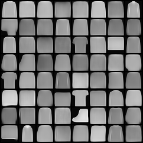
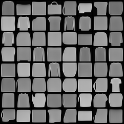
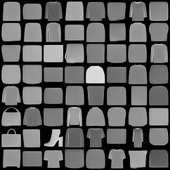
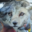
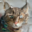
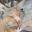

Each homework adds one layer of the diffusion-model picture. By HW4 the pieces combine into a guided image generator with quantitative FID evaluation.
Density & score of a 2D Gaussian mixture from scratch, train a score network, then sample via (annealed) Langevin dynamics — finishing with MNIST image generation by denoising score matching.
A denoising diffusion probabilistic model trained on Fashion-MNIST. Three saved checkpoints (mean / variance / noise models) and 12 saved sample grids across training.
Reproduces Song et al. (2021): Variance-Preserving SDEs, Euler–Maruyama simulation, Anderson's reverse SDE, the probability-flow ODE, and conditional (classifier-guided) generation.
Implements DDPM/DDIM sampling on a 2D spiral (Chamfer-distance scored) and class-conditional image diffusion on AFHQ with classifier-free guidance (FID-scored).
HW4/HW4_report.pdf (real numbers): DDPM Chamfer 11.53, DDIM Chamfer 10.32, image FID 4.76 (no guidance) → 0.34 with CFG scale 7.5.The shared backbone of every assignment. The forward process gradually adds Gaussian noise; a network learns to reverse it one step at a time. Drag the slider to walk through diffusion timesteps on a 2D point cloud.
ddpm.py)def q_sample(self, x0, t, noise=None):
if noise is None: noise = torch.randn_like(x0)
alphas_prod_t = extract(self.var_scheduler.alphas_cumprod, t, x0)
xt = alphas_prod_t.sqrt() * x0 + (1 - alphas_prod_t).sqrt() * noise
return xt
The model is trained with the simplified noise-matching objective (DDPM Eq. 14): predict the noise ε that was added.
def compute_loss(self, x0):
t = torch.randint(0, self.var_scheduler.num_train_timesteps, (B,))
noise = torch.randn_like(x0)
x_t = self.q_sample(x0, t, noise)
noise_pred = self.network(x_t, t)
return F.mse_loss(noise_pred, noise)
This applies the exact closed-form forward step from ddpm.py's
q_sample to a real image, pixel by pixel:
x_t = √(ᾱ_t)·x₀ + √(1−ᾱ_t)·ε, ε ~ N(0,I)
Drag the timestep slider from t=0 (clean) to t=T (pure Gaussian noise). The schedule for ᾱ_t is computed
live; switch between the linear β-schedule (DDPM, Ho et al.) and the cosine schedule
(Nichol & Dhariwal) used for sharper images.
def q_sample(self, x0, t, noise=None):
if noise is None: noise = torch.randn_like(x0)
a_bar = self.var_scheduler.alphas_cumprod[t] # ᾱ_t
return a_bar.sqrt() * x0 + (1 - a_bar).sqrt() * noise
This runs the actual trained weights from
HW2/model/noise_model.pth (shipped here as a 41 KB JSON, ~4.2k floats).
It is the noise-prediction network εθ(x,t) for the course's 1-D
Variance-Preserving diffusion whose data distribution is a mixture of two Gaussians centred at
−3 and +3 (σ=0.5). Press Generate and watch a cloud of particles start as pure
Gaussian noise N(0,1) and get denoised, step by step from t=1→0, into that bimodal target — produced
entirely by the real network's forward passes, re-implemented exactly in JavaScript.
.pth)net = Sequential(Linear(2,64), ReLU(), Linear(64,64), ReLU(), Linear(64,1)) input = concat([x, t]) # x∈ℝ (1-D), t∈[0,1] continuous output = ε_θ(x,t) # predicted noise → score = −ε_θ/√(1−ᾱ_t) schedule: VP-SDE, β(t)=β₀+(β₁−β₀)t, β₀=0.1, β₁=20, T=1000, dt=1e-3
HW3_sol.ipynb)score = −ε_θ(x,t) / √(1−exp(−∫β)) # noise-pred → score x = x + ½·β(t)·x·dt + β(t)·score·dt + √(β(t)·dt)·z # z~N(0,1), t:1→0
Instead of only watching samples, this visualizes what the trained
HW2/model/noise_model.pth network has actually learned. Over the whole (x, t) plane we
evaluate the real network εθ(x,t) on a grid and convert it to the score
∇x log pt(x) = −εθ / √(1−ᾱt). The score is the drift that the
reverse process follows: it should point toward the data — the ±4 modes of the 1-D mixture
(centred at −4 and +4, the +4 mode 2× heavier). Warm = push right (+x), cool = push left (−x); the white
streamlines are real denoising trajectories integrated with the same network.
eps = noise_model(x, t) # the real trained network, t∈[0,1] abar = exp(-(½(β₁-β₀)t² + β₀t)) # VP-SDE ᾱ_t (β₀=0.1, β₁=20) score = -eps / sqrt(1 - abar) # Anderson reverse-SDE drift
noise_model.pth on a grid — the same weights, JS port verified to <3×10⁻⁷ vs PyTorch
(see the Generate tab). This is the trained model's behaviour made visible, not an illustration.HW2 trains the reverse process three ways. The Generate tab uses the noise model
(predict ε). Here are the other two trained nets:
HW2/model/mean_model.pth and HW2/model/var_model.pth, which directly
predict the posterior p(xt-1 | xt) = N(μθ(x,t),
σθ(x,t)²) of HW2's "equation 3" reverse process. The data is the 1-D mixture at
−4 / +4 (the +4 mode 2× heavier), with T=250 discrete steps, β=0.02.
HW2_sol.ipynb)predicted_mean = mean_model(x_t, t)
predicted_var = softplus(var_model(x_t, t)) # ensure positivity
sigma = sqrt(predicted_var)
x_{t-1} = predicted_mean + sigma * z # z ~ N(0,1)
Linear(2,64)→ReLU→Linear(64,64)→ReLU→Linear(64,1) on input [x, t/250]. The JS forward pass
was checked against PyTorch on sample (x,t) inputs — e.g. μ(x=3,t=50)=3.0213, σ=0.1511; μ(x=−2,t=100)=−2.0124
— matching to <1×10⁻⁵. The eq.-3 sampler reproduces the same bimodal ±4 distribution the PyTorch
model produces.These are the user's actual image-diffusion outputs from HW4 Task 3: 32×32
class-conditional AFHQ (animal-face) samples, taken straight from
HW4/HW4_3_images/samples_cfg_0.0/ and samples_cfg_7.5/. Drag the
guidance scale slider to cross-fade between the two real sample sets and watch how guidance trades
diversity for fidelity.
16 real samples per scale, from HW4/HW4_3_images/samples_cfg_*.
FID values (4.76 → 0.34) are exactly as printed in HW4/HW4_report.pdf.
Notebook: HW1/HW1_337604821.ipynb — "Score Matching and Langevin Dynamics".
torch.distributions, visualized as a heatmap + quiver (arrow) field.Trained checkpoints in HW2/model/ (mean_model.pth, var_model.pth, noise_model.pth); 12 saved sample grids in HW2/results/ at increasing training steps.
These are the model's own outputs — 8×8 grids of generated Fashion-MNIST garments at three points in training:



Recognizable shirts, trousers, bags, boots and dresses emerge from pure Gaussian noise through the learned reverse process — the same p_sample loop shown in the Forward/reverse tab, applied to 28×28 images.
Notebook HW3/HW3_sol.ipynb — reproduces parts of Song et al., arXiv:2011.13456.
Recreates Figure 2 of the paper with Euler's method, using the Variance-Preserving SDE.
Derives the deterministic ODE whose marginals match the SDE, removing the noise term.
Anderson's reverse-time SDE driven by the learned score ∇ₓ log pₜ(x).
Views the trained DDPM as a score network, then does classifier-guided conditional generation toward a target class.
pcolormesh, and Part 4's class-conditional generation with a classifier guidance strength γ.Code in HW4/HW4_code/; results & metrics in HW4/HW4_report.pdf and HW4/HW4_3_images/.
A diffusion model is fit to a 2D spiral distribution; quality is the Chamfer distance between 2048 generated and reference points (lower is better). DDIM uses a quadratically-spaced timestep subsequence for faster sampling.
pc_gen = ddpm.p_sample_loop(shape=(2048, 2)) # DDPM → 11.5294 pc_gen = ddpm.ddim_p_sample_loop(shape=(2048, 2), eta=1.0) # DDIM → 10.3217
Both clear the assignment thresholds (DDPM < 20, DDIM < 40). The DDIM one-step update implemented in ddpm.py:
predicted_x0 = (xt - √(1-ᾱ_t)·ε_θ) / √(ᾱ_t)
x_{t-1} = √(ᾱ_prev)·predicted_x0
+ √(1-ᾱ_prev-σ²)·ε_θ
+ σ·z # σ=0 ⇒ deterministic DDIM
Class-conditional image diffusion on AFHQ (cat / dog / wild), with classifier-free guidance. FID is measured at two guidance scales (lower FID = closer to the real data distribution):



muddier, less class-faithful
sharper, more clearly an animal face
Real generated 32×32 samples from HW4/HW4_3_images/samples_cfg_0.0/ and samples_cfg_7.5/.
HW4_report.pdf.)